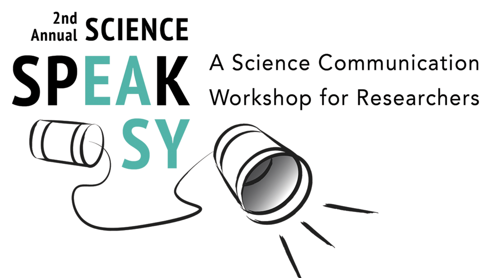
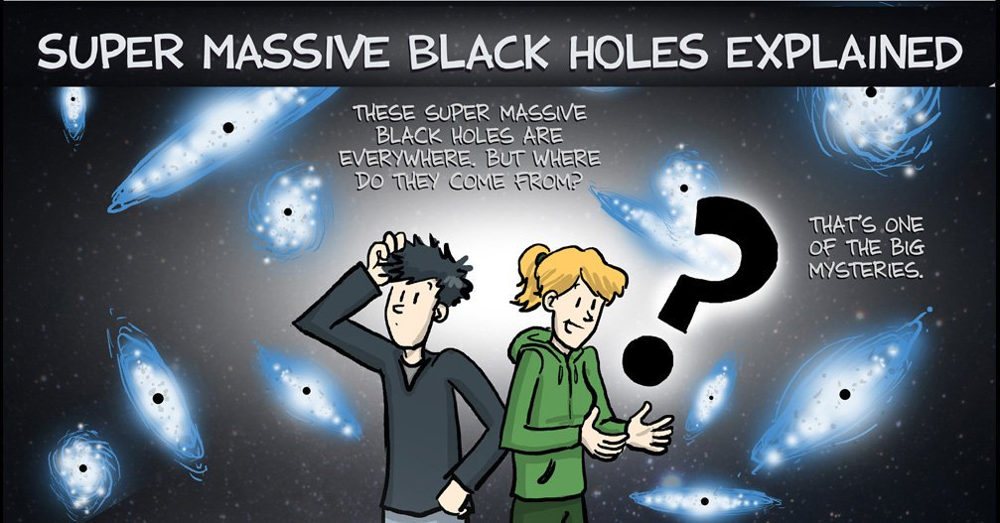

In collaboration with Fiske Planetarium, I started a science communication workshop for scientists. There is little training for graduate students and early career scientists in this area, and I have contributed to several white papers on the topic. I ran the workshop for two years at CU Boulder; each year we had a different theme. The first year, we focused more on speaking to public audiences, and the second year, we shifted to giving talks to scientists. We have had positive feedback from graduate students both years and this workshop will continue at CU for years to come. In the future, I hope to expand the workshop to include a youtube presence for some of the workshop sessions as they are relevant and useful for graduate students everywhere. 

Science of Sci Fi
I also ran multiple graduate student talk series at Fiske Planetarium, including The Science of Sci Fi and Science and Society. I have written about how these type of programs are beneficial to graduate students and engaging for the public in a and have given multiple talks myself as part of these talk series, including Zombie Pathology: A Survival Guide for Pandemics in the 21st Century.
I was immortalized in a comic about supermassive black holes by the talented Jorge Cham. He interviewed my research group at CU and created a marvelous video about our research.

I love to speak publicly, and Astronomy on Tap is one of my favorite places to do so! I have given two talks, one about gravitational waves, and one about "The Dino's Demise" which uses The Land Before Time to explore the impact of asteroids on Earth.

Supermassive Black Hole Documentary Film
PhD Comics: Supermassive Black Holes Explained
Promoting an Inclusive Community in Astronomy (PICA)
Astronomy on Tap